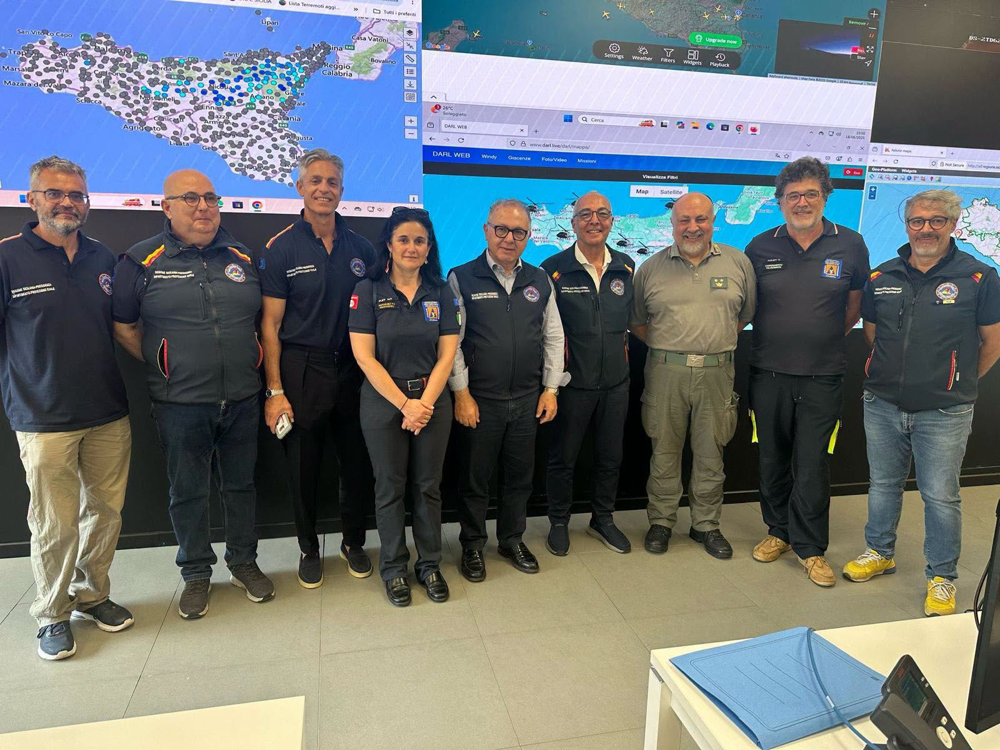

La raccolta storica di tutti gli interventi, i comunicati ufficiali e i progetti sociali portati a termine dall'Associazione.

Rafforzare la capacità di monitoraggio del territorio e di gestione delle emergenze attraverso una collaborazione strutturata tra Pubblica Amministrazione e volontariato organizzato fortemente voluta dal direttore Cocina. È questo l’obiettivo della convenzione sottoscritta tra il Dipartimento regionale della Protezione Civile della Presidenza della Regione Siciliana e Anpas Sicilia, che entra ora nella fase operativa dopo il completamento del percorso formativo rivolto ai volontari destinati a operare a supporto della Sala Operativa Unica Regionale (SOUR).
La SOUR rappresenta il centro nevralgico del sistema regionale di Protezione Civile, assicurando il monitoraggio continuo del territorio, il raccordo con gli enti coinvolti e il coordinamento delle attività di gestione delle emergenze. Il percorso formativo, curato dal dott. Mannella, responsabile della Sala Operativa Unica Regionale, ha consentito ai volontari di acquisire competenze specifiche sulle procedure operative, sull’impiego delle piattaforme informatiche dedicate, sulla gestione dei flussi informativi e sulle modalità di supporto alle attività della Sala Operativa.
I volontari selezionati, già in possesso di una consolidata esperienza nelle attività di Protezione Civile, saranno progressivamente coinvolti nello sviluppo di competenze specialistiche nell’utilizzo delle piattaforme digitali per la gestione delle emergenze, nelle procedure operative, nella sicurezza informatica e nella comunicazione istituzionale in emergenza.
"Dal 2020, quando sono rientrato alla guida del Dipartimento regionale della Protezione Civile, ho voluto imprimere una svolta decisa al sistema del volontariato organizzato. Oggi, a distanza di sei anni, possiamo contare su una realtà siciliana altamente qualificata, meglio attrezzata, fortemente motivata e sempre più specializzata. Il progetto “Pro_Digi” rappresenta un esempio di eccellenza. Ciò dimostra come la sinergia tra istituzioni e volontariato organizzato rappresenti uno dei principali punti di forza della Protezione Civile siciliana."
"Questo accordo rappresenta un importante esempio di collaborazione tra istituzioni e volontariato organizzato. I nostri volontari metteranno a disposizione competenze, esperienza e spirito di servizio per contribuire al rafforzamento della capacità di monitoraggio e di risposta del sistema regionale di Protezione Civile."
La collaborazione consentirà di verificare l’efficacia di un modello organizzativo fondato sulla piena integrazione tra strutture pubbliche e volontariato organizzato. Qualora i risultati confermino la validità dell’iniziativa, il modello potrà essere progressivamente esteso anche alle altre organizzazioni di volontariato di Protezione Civile iscritte nell’Elenco territoriale della Regione Siciliana, così da valorizzare le migliori competenze disponibili e rafforzare ulteriormente la capacità di risposta del sistema regionale.
Il Presidente Regionale di ANPAS Sicilia, a nome di tutto il movimento delle Pubbliche Assistenze siciliane, esprime la più ferma condanna e la totale solidarietà alla Croce Blu di Catania per la vile aggressione subita dai propri volontari durante un intervento del 118 nel comune di Riposto.
Presidio costante dei nostri volontari dotati di moduli idrici ad alta pressione per prevenire ed arginare focolari estivi nelle aree verdi comunali di Nicosia.
In collaborazione con la rete locale, sono state completate le operazioni logistiche di stoccaggio e scarico dei pacchi dono per il sostentamento dei nuclei familiari più fragili.